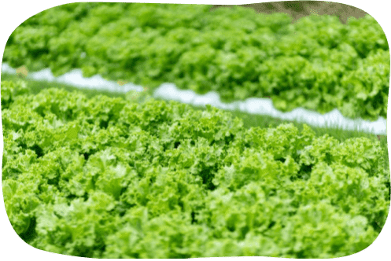
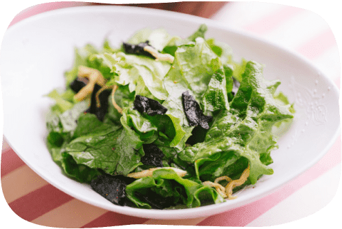

その野菜の
一番
いい状態を届ける
収穫がたった１日違うだけで野菜の味わいがガラッと変わることも珍しくありません。
しま農園は長年野菜に寄り添ってきたプロの目で、ベストなタイミングで収穫し、鮮度を落とさずに出荷しています。美味しい野菜の一番の決め手は「鮮度」にあると思っています。



野菜の生命力を
最大限に生かす
標高の高い土地に構えるしま農園は、冬には厳しい寒さが待っています。
農薬や化学肥料をなるべく使わずに高原の自然と真摯に向き合った野菜の生命力が本当のうまみに変わり、健康の原動力になります。

美味しさを
ぎゅっと
詰め込む
毎日食べたいものだから、味には徹底的にこだわりました。
凝縮したジュースのような濃い味と口の中でふわっと広がる香りは一度食べればやみつきになります。
品種や育て方に徹底的にこだわり、濃い野菜を作っています。
